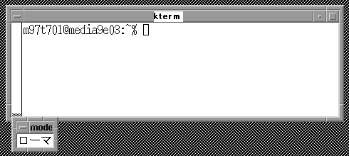
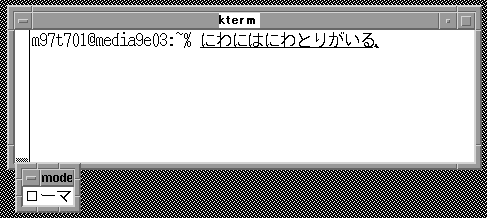
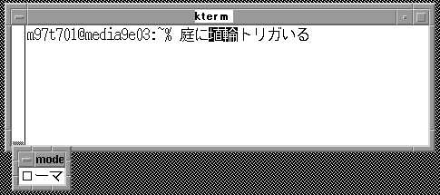
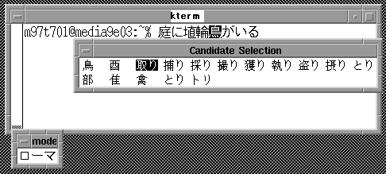
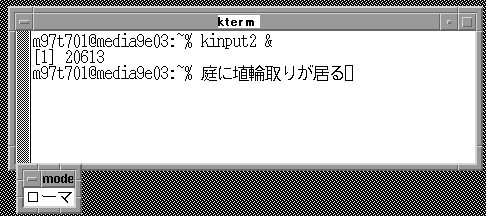
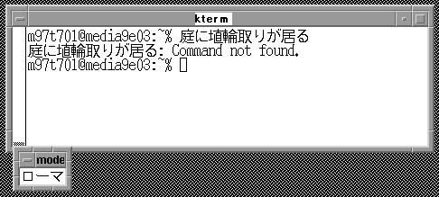
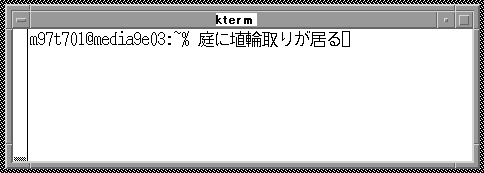

Last Updated: 10/29/99
Teruko Kobayashi
The following describes what various key uses are for kinput2 Unix IME Front End for Wnn4 by using the default key remapping.
1. Set up
At first, you need to copy ccdef.kinput2 file to
your home directory.
% cp /usr/lib/X11/ccdef/ccdef.kinput2
$(HOME)/myccdef
Use -ccdef option to start kinput2.
% /usr/X11R6/bin/kinpu2
-wnn -ccdef $(HOME)/myccdef &
Execute the application, example kterm, apprunner.
% kterm
2. Basic key stroke
The following explains how to type Japanese characters
by using kinput2.
| Kana input mode
([Shift]+[space] after kinput2 runs). kinput2 window will open at the bottom. In this mode, input characters will be underlined. |
 |
| After you type Hiragana, you can go to Conversion
mode by [Control] + j. |
 |
| Conversion mode.
Conversion candidate parsed area will be highlighted. [Control] + i -increase the parsed area by 1 character in conversion mode [Control] + o-decrease the parsed area by 1 character in conversion mode [Control] + n-go to next candidate [Control] + p-go to previous candidate [Control] + f-move the cursor forward in input [Control] + b-move the cursor backward in input [Control] + g-go back to kana input mode |
 |
| Conversion mode.
Decreased the first parsed area, and now the cursor is in the second parsed area. |
 |
| Candidate selection mode.
In Conversion mode, Candidate selection window will be open by [Control] + j. [Control] + f - go to the candidate in forward [Control] + b - go to the candidate in backward [Control] + n - go to the candidate in lower [Control] + p - go to the candidate in upper [Control] + m - confirm the characters. Once you click on the candidate character, the character is confirmed. [Esc] - go back to Conversion mode. |
 |
| In Conversion mode, you will confirm the sentence by [Control] + l
, and go back
to Kana input mode. |
 |
| In Conversion mode, you can go back Kana input mode by [Control] + m. |  |
| In Conversion mode, you will finish using kinput2 by [Control] + [space]. |  |
3. Key stroke table
| MODE | ACTION | KEY STROKE | |
| (Command line) | Start Kana Input Mode | [Shift] + [space] | |
| All mode | Go back to Command line | [Shift] + [space] | |
| Confirm whole sentence | [Ctrl] + l | ||
| Moving text and sentence | move to the right | [Ctrl] + f or [Å®] | |
| move to the left | [Ctrl] + b or [Å©] | ||
| move to the upper | [Ctrl] + p or [Å™] | ||
| move to the lower | [Ctrl] + n or [Å´] | ||
| move the cursor to the right end | [Ctrl] + e | ||
| move the cursor to the left end | [Ctrl] + a | ||
| Kana Input mode | Go to Conversion mode | [Ctrl] + j | |
| Start and end JIS code input | [F5] | ||
| Start and end Kuten code input | [F6] | ||
| Changing the input mode (hiragana->double byte alphabet->single byte alphabet->double byte kana) | [F8] | ||
| Changing the input mode (opposite order from [F8]) | [F9] | ||
| Start symbol input (end [Esc]) | [F10] | ||
| Conversion mode | Increase the parsed area by 1 character in conversion mode | [Ctrl] + o or [Shift] + [Å®] | |
| Shorten the parsed area by 1 character in conversion mode | [Ctrl] + i or [Shift] + [Å©] | ||
| Select next candidate | [Ctrl] + n | ||
| Select previous candidate | [Ctrl] + p | ||
| Go to Candidate selection mode | [Ctrl] + j | ||
| Go back to Kana Input mode(In the current paragraph only) | [Ctrl] + g | ||
| Confirm the sentence + [Enter] | [Ctrl] + m | ||
| Kana Input modeÅE
Convert mode |
Convert to Katakata | [F1] | |
| Convert to Hiragana | [F2] | ||
| Convert to single byte | [F3] | ||
| Convert to double byte | F4] | ||
| Candidate selection mode | Confirm the selection | [Ctrl] + m or left mouse click | |
| Go back to conversion mode | [Esc] | ||